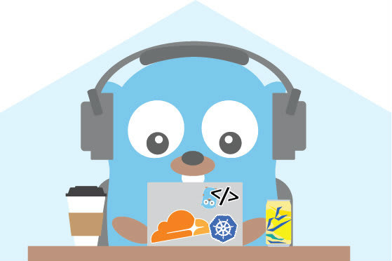
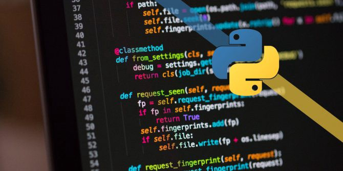

API RESTful
API RESTful desenvolvida com c# e ASP.NET Core
Tecnolonia: C#, MySQL
App Ionic
App de agendamento de carros para test driver
Tecnolonia: Ionic

Monitoramento de sites
Este programa lê os sites dentro do arquivo Sites.txt e inicia o monitoramento destes,
enquanto gera um arquivo log.txt para registrar as informações.
Tecnolonia: GO
Impressora 3D
Código fonte da minha impressora 3D montado partir de um forked do
firmware marlin.
Tecnolonia: C++
Apps desenvolvidos com React native desenvolvidos no curso
da Udemy: Desenvolvedor Multiplataforma Android/IOS com React e Redux.
APP1: é um app que gera numeros randômicos
APP2: é um app de freses do dia
APP3: é um app que joga pedra, papel e tesoura com você
APP4: App que consome api
APP5: App de uma empresa
APP6: App cara ou coroa
Tecnolonia: React native

Web-Crawler
Uma web crawler é um IA que capturam informações de sites. São muito usados por buscadores como o google,
Yahoo, DuckDuckBot entre outros.
Tecnolonia: Python
Projeto do curso da Udemy: Curso Completo do Desenvolvedor NodeJS e MongoDB.
Este programa é um site responsivo conectado com o banco Mysql criado na estrutura
MVC. Feito com o objetivo de ser um portal de notícias.